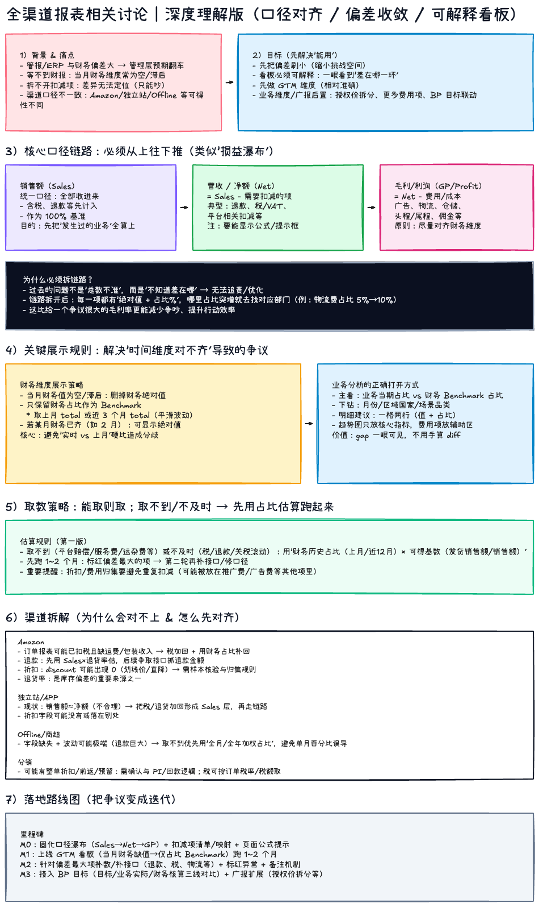

全渠道报表相关讨论｜深度理解版（本地预览）
- 预览图：
全渠道报表相关讨论-深度理解版.png
- 可编辑源文件：
全渠道报表相关讨论-深度理解版.excalidraw
想继续编辑：先确保 Excalidraw Canvas 在运行（通常是
http://localhost:3000
），然后在 Canvas 页面里 使用 Import 导入
.excalidraw
文件即可。
打开 PNG 预览（新窗口）
下载/打开 .excalidraw 源文件
打开本地 Canvas（用于导入编辑）
